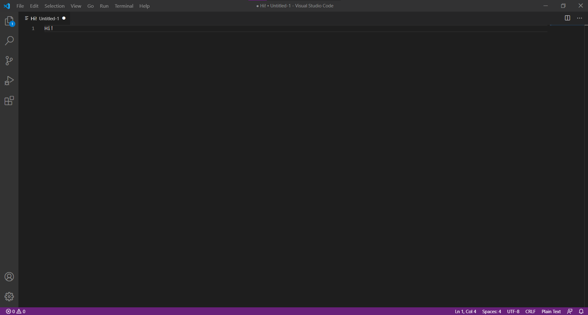

Get Started
Welcome to Interphase's dedicated tutorial on getting you started with synthesizing apps! Don't worry if you've never programmed before or even know what programming means. If you don't, then you're in the right place.
What is coding?
If you want to create a good app, you will probably need to learn how to code. Coding, which is a subset of programming, refers to writing a sequence of instructions into a file, that when executed, instruct the computer you're on to do carry them out. You will soon realise that the ability to write coherent code to visualize your ideas is extremely empowering.
Now that you know what coding means and how impactful it can be it is time to see some code. Lo and behold the 'code' below.
public class Main {
public static void main(String[] args) {
String greeting = "Hello this is Java code";
System.out.println(greeting);}
}
Don't concern yourself with the weird signs around the sentence for now. Just know that this is an example of code. When this is written into a special file that ends in .java and run in a compatible environment, it will output that sentence in all its glory.
Choosing a way to write your code
We believe that one of the first things you should think about is what text editor you use. This is what you will use to write your 'code'. This matters because a good text editor will improve your work flow which will contribute to making you a better programmer. We recommend a couple of the finest text editors out there below, with a brief description of what they're good for and not so good for. Additionally, while there may be more specific editors for Java development we believe familiarising yourself with editors that work well across the board is a key factor in broadening your knowledge of different languages.
| Editors | Pros | Cons |
|---|---|---|
| VS Code | Highly customisable & provides source control tools | A little complicated for beginners |
| Atom | Offers the best integration with Github & a modern design | Large install size & runs slowers with many plugins |
| Sublime Text | Sleek and simple, has a distraction free writing mode & optimised for speed of execution | Lacks the same variety of plugins as VS Code and Atom |
You will find that any of these text editors will offer you an enjoyable coding experience. Our personal recommendation would be to perhaps start with a lighter editor such as Sublime Text, and once you feel more comfortable, perhaps move on to using an editor like VS Code (our personal favourite, and what we used to write this website).
What even are programming languages?
All of the above is good and well, but you've probably heard of the term 'programming languages' before and wondered what exactly this means.
These are in fact quite intuitively named - these are languages in the sense that they are used for us to communicate with computers. You may be surprised to hear that computers don't actually understand the code that you write. This needs to be translated first into another language that they do understand (do you see why they are called languages now?).
There are different types of programming languages that are built to serve different purposes across the board an example of one of these types is Java which is an object oriented programming language that is finely tuned to create applications whether it be on the web or on your desktop.
Your time has come
You know what code means, you've seen what code looks like and you've even been introduced to the notion of languages. It is time for you to have a go at implementing this understanding for yourself.
Take another look at the text editors above and see what picks your fancy. If you're completely lost for choice, then as you're just getting started, we recommend trying out Sublime Text, which is the lightest editor out of the three (when we say 'lighter' we are referring to the size and complexity of the program - nothing else...).
To get started with using Sublime Text (or any text editor of your choice for that matter), the best practice is to get familiar with the respective editor's website and documentation. You will find that Google will be your best friend for this sort of stuff. We will help you out this one time and offer you the shortcut of just clicking here, which will take you to the official place where you can download the editor for yourself.
We would also like to emphasise the following point, so we will put it in bold: Try your best to get into the habit of reading documentation. This is perhaps one of the most invaluable pieces of advices we can offer to you as an aspiring programmer, and is something that we would hope you will keep with you far beyond reading this page.
You should be able to find the download link for your text editor now - in which case, make sure to install it following the respective set-up wizard, and then go ahead and open it.
Once you've created a new file in your editor of choice, you will see something like the above. If you do, then you're well on your way to producing your first piece of code.
We introduce you to one of the most popular programming languages used in the world, Java. This language is a programming language and was primarily used for writing simple applications for the web, however, it has evolved due its simple and efficient nature to be used in multiple industries and on varying scales. When you're constructing your app, you will most likely want to output text to the user Java allows you to do this using the System.out.println() function.
We can print different pieces of content that may take different forms. For instance, in most programming languages, a variable is used as a place holder for information of possibly different types an example of this would be: String greeting = "Hello this is Java code"; which specifies the type of variable as a "string" of alphabetic characters. This variable can be used and altered by making use of the different utilities of Java. As it stands now the we have placed the sentece within this placeholder for use later on.
However, before we can alter and output whatever resides within our variable, there are some good practices that we should learn that help the computer understand our instructions. When creating a Java program, we often start by declaring the Main class:
public class Main {
public static void main(String[] args) {
}
}
This is not as scary as it might seem. The first declaration, public class, simply tells your computer that access to this class(piece of code) is public and can be accessed by other classes.
What follows, however, is a variable piece of code that is quite versatile and dependent on how you wish to mold you application. We encourage you to research what each of these words mean.
As such, yes, our
String greeting = "Hello this is Java code";
System.out.println(greeting);
is greatly positioned between these brackets. In fact, if we reconstruct the code as we have shown you initially we should obtain the output we desire: Hello this is Java code
public class Main {
public static void main(String[] args) {
String greeting = "Hello this is Java code";
System.out.println(greeting);}
}
You have now officially created your first meaningful piece of code, and it is ready to be displayed in your environment. We know you're eager, but you need to save this file before you do anything. You can call it whatever you want, but you need to make sure that your file ends in '.java'. For example, a suitable file name is 'app.java'. Once it has been saved, find wherever you saved it, and proceed to open it using a suitable environment such as Android Studio or online here. You should see your first piece of code come to life.
Am I done?
Not quite.
You've merely scratched the surface, but that's okay. You are starting your journey into the programming world and you need to take baby steps before you go any further. This page is designed to help you walk those steps as smoothly as possible. Once everything on this page has sunk in, you are ready to transcend into the world of detailed tutorial and documentation. We leave you with our personal favourite that beautifully continues where we leave you, W3Schools.